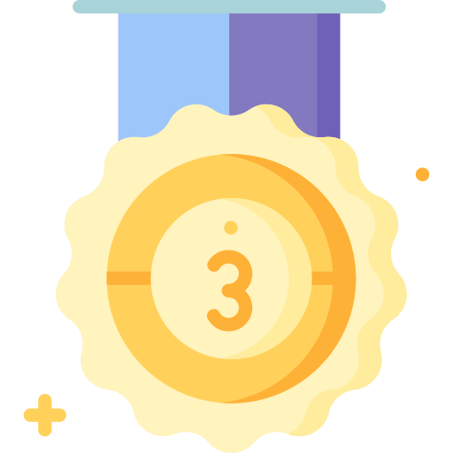

Pacchetti Coaching
Scopri i pacchetti di coaching personalizzati per raggiungere i tuoi obiettivi sportivi. Scegli quello più adatto a te!

Pacchetto Base
Per l'atleta amatore avanzato non esigente
Programma di allenamento personalizzato (costo bimestrale anticipato)
- Call iniziale per anamnesi atleta
- Invio tabella ogni 4 settimane in formato PDF via email
- TEST da campo periodici per verificare andamento
- Consigliato un orologio GPS compatibile con i vari portali (GARMIN/POLAR etc) e cardiofrequenzimetro
- Contatto telefonico o via whatsapp ogni 4 settimane per analisi andamento e pianificazione settimane successive
- Stesura piano gare se richiesta
- Coaching, consigli vari sulla chat riservata di Whatapp
- Listino scontato per test LATTATO e altri test in presenza
Pacchetto Pro
Per l'atleta amatore esigente
Programma di allenamento personalizzato (costo bimestrale anticipato)
- Call iniziale per anamnesi atleta
- Carico allenamenti ogni 2 settimane su software coachpeaking (costo annuo abbonamento a carico dell'atleta)
- Strumenti necessari: orologio GPS compatibile (GARMIN/POLAR ecc.)
- Richiesto cardiofrequenzimetro, consigliato misuratore di potenza per la parte ciclismo e/o rulli
- Analisi allenamenti su software coachpeaking
- Contatto via chat coachpeaking illimitato
- Contatto via whatsapp/telefonico ogni DUE settimane per analisi andamento e pianificazione settimane successive
- Coaching, consigli vari sulla chat riservata di Whatapp
- Stesura piano gare se richiesta
- Listino scontato per test Lattato e altri test in presenza fisica
Pacchetto Gold
Per l'atleta professionista
Programma di allenamento personalizzato (costo quadrimestrale anticipato)
- Call iniziale per anamnesi atleta
- Carico allenamenti settimanali su software coachpeaking (costo annuo abbonamento compreso)
- Strumenti necessari un orologio GPS compatibile con i vari portali (GARMIN/POLAR etc.)
- Richiesto cardiofrequenzimetro e consigliato misuratore di potenza per la parte ciclismo e/o rulli
- Analisi allenamenti su software coachpeaking
- Contatti illimitati via chat coachpeaking e tramite whatsapp per analisi andamento e pianificazione settimana successiva
- Possibilità di modifica del piano di allenamento continua anche all’interno della settimana
- Stesura piano gare se richiesta
- Coaching, consigli vari sulla chat riservata di Whatapp
- Una giornata di Test in presenza nel mio studio ogni quadrimestre (con test lattato compreso)
- Listino scontato per test Lattato e altri test in presenza fisica